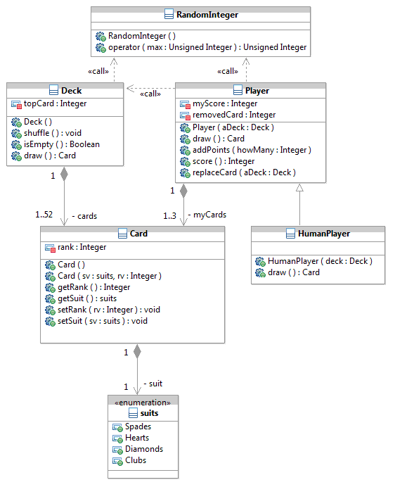

Winter 2012, Zemoudeh
CSE 330: Data Structures
School of Computer Science and Engineering
California State University, San Bernardino
Last modified: Monday, Mar. 19.
Grades
hash_simple.cpp
hash1.cpp
Study problems for the Final:
Chapter 2: Exercises 6, 7, 8, 9, 10, 11 Pages 42 and 43.
Chapter 3: Exercises 7, 8, 9 Pages 61 and 62.
Chapter 4: Exercises 11, 12, 13 Page 85.
Chapter 6: Exercises 1, 2 Page 120.
Chapter 7: Exercises 1, 2, 5, 7, 8, 9, 10, 11, 12, 14, 18 Pages 152 and 153.
Chapter 8: Exercises 2, 3, 4, 6, 9, 13, 14, 15 (must be in O(1)), 16 Pages 182 and 183.
Chapter 9: Exercises 3, 7, 8, 12, 13 Pages 215 and 216.
Chapter 10: Exercises 2, 5, 6, 7, 8, 9, 11 Pages 235 and 236.
Chapter 11: Exercises 1, 3, 4 (already done in the lab) Page 262.
Chapter 12: Exercises 2, 9, 10, 11, 13, 14 Pages 291 and 292.
Chapter 13: Exercises 2, 3, 4, 5, 6, 10, 11, 13, 15, 16 Pages 324 and 325.
Chapter 14: Exercises 1, 2, 3, 5, 9 Page357.
Chapter 15: Exercises 1, 2, 3, 5, 7, 11 Pages 384 and 385.
Chapter 16: Exercises 2, 3 Page 405.
Chapter 17: Exercises 1, 2, 3, 4, 5, 6, 8, 9 Page 427.
Final: Wed, Mar 21, 12:00-1:50 PM
Home work 4: Alternative Deque Implementation. Due Wednesday, Mar. 14.
An alternative implementation of the Deque compared to the lab's implementation is to use one ARRAY instead of two vectors.
In this implementation the Deque is maintained in the middle of the array AS MUCH AS POSSIBLE. In this way there is room for growth on both ends of the Deque without the costly allocate-copy operations.
Modify lab 7 Deque to implement this alternative. Do not change the interface (operation names and parameters) of the Deque, only the internal implementation should change. Start with the following declaration and add the definition of all the member functions from lab 7 such as push_back(), erase(), operator[](), etc. Also, center_it() must be completed:
template <class T>
class Deque {
public:
typedef DequeIterator<T> iterator;
Deque(): my_capacity(10) { buffer = new T[10]; front_ptr = next_back = 10/2; }
Deque(const unsigned int size, const T & initial): my_capacity(size), front_ptr(0), next_back(size) {
buffer = new T[size];
for (int i = front_ptr; i < next_back; i++)
buffer[i] = initial;
}
// ... more code goes here ...
T & front() { assert(front_ptr < next_back); return buffer[front_ptr]; }
T & back() { assert(front_ptr < next_back); return buffer[next_back - 1]; }
// ... more code goes here ...
protected:
T * buffer;
int front_ptr, next_back;
int my_capacity;
void center_it();
};
Here buffer is the array, my_capacity is the capacity of the buffer, front_ptr points to the front element of the Deque, and next_back points to the element just to right of back element of the Deque. Note next_back - front_ptr is the size of Deque.
For example, in the following configuration:
| 0 |
1 |
2 |
3 |
4 |
5 |
6 |
7 |
8 |
9 |
| |
|
|
|
|
|
10 |
25 |
30 |
|
| |
|
|
|
|
|
0 |
1 |
2 |
my_capacity = 10, front_ptr = 6, next_back = 9, and Deque size is 3.
The array index ranges from 0 to 9, and the Deque index ranges from 0 to 2.
Suppose two push_back() operations arrive:
push_back(10);
push_back(15);
On the second push_back(), center_it() is called and the following configuration results:
| 0 |
1 |
2 |
3 |
4 |
5 |
6 |
7 |
8 |
9 |
| |
|
|
10 |
25 |
30 |
10 |
15 |
|
|
| |
|
|
0 |
1 |
2 |
3 |
4 |
|
|
This buffer can handle two more push_back() operations, but on the third operation a larger buffer must be allocated.
This is part of the "policy" used for this implementation. Let's implement the following policy: every time an insert operation (push_back(), insert(), or push_front()) is called and the Deque is trying to grow beyond one of the ends of the buffer, center_it() is called. center_it() first decides whether to enlarge the buffer.
If Deque size is > my_capacity/2, then capacity is enlarged by a factor of two (my_capacity *= 2;). Otherwise capacity is not changed. In both cases, the Deque is centered in
the middle of buffer.
Hand in a printout of your program (Deque.h). The test programs from lab 7 should compile and run with the new implementation without any errors. State the percentage completed and time complexity of all functions.
Home work 3: Course Registration System. Due Wednesday, Feb 29.
Complete the Course Registration System given in section 9.3.2 (pages 196-202).
You are to give your own main() and two input files together with all
the code given in the section and other functionality not listed.
First and foremost, if you've already not done so, refer to the errata list to fix the errors in this section.
Second, read this section as many times as necessary to understand it! To be able to complete this program
you must have a clear understanding of what the author has already done. Only then
you can begin to complete the program.
Keep your code simple.
Do not modify the code given in the text other than the errata list modifications.
Your course file should contain 5 courses. Choose a limit of 3 or 4 for each course.
Your student file should contain the requests of about 10 students. Note there would be
more than 10 records in this file as a student usually requests more than one course.
Hand in printouts of your program, the two input files, and the two reports.
mergeSort1.cpp
mergeSort2.cpp
mergeSort3.cpp
binarySearchSeq.cpp
binarySearchRec.cpp
Study problems for the Midterm:
Chapter 2: Exercises 6, 7, 8, 9, 10, 11 Pages 42 and 43.
Chapter 3: Exercises 7, 8, 9 Pages 61 and 62.
Chapter 4: Exercises 11, 12, 13 Page 85.
Chapter 6: Exercises 1, 2 Page 120.
Chapter 7: Exercises 1, 2, 5, 7, 8, 9, 10, 11, 12, 14, 18 Pages 152 and 153.
Chapter 8: Exercises 2, 3, 4, 6, 9, 13, 14, 15 (must be in O(1)), 16 Pages 182 and 183.
Chapter 9: Exercises 3, 4, 6, 7, 8, 12, 13 Pages 215 and 216.
Midterm: Wednesday, Feb 15.
Home work 2: Four-card Solitaire. Due Mon, Feb 13.
Write a C++ program to play four-card solitaire.
The rules of the game are as follows:
You may play this game here.
Reuse as much code as possible from war.cpp and war2.cpp to write this program.
First, use war.cpp to develop and debug your program. Then refer to war2.cpp where srand() and time(0) calls are used
to make successive runs different.
Note in the War program Ace has the lowest rank; here Ace has the highest rank. The slightest modification
accommodates this requirement!
In each round of play, your program should prompt the player for the column number.
If the top card in that column is smaller than one of the other three top cards,
the card must be discarded.
If the top card selected is an Ace, then the player must specify which column it has to move to.
After each selection, the new
configuration of the columns must be displayed similar (but not necessarily exactly) to the following:
$ a.out
Col 1 Col 2 Col 3 Col 4
2 Diamonds Ace Diamonds Jack Diamonds 10 Hearts
Enter a column number (0 to draw four new cards): 1
Col 1 Col 2 Col 3 Col 4
Ace Diamonds Jack Diamonds 10 Hearts
Enter a column number (0 to draw four new cards): 3
Col 1 Col 2 Col 3 Col 4
Ace Diamonds 10 Hearts
Enter a column number (0 to draw four new cards): 0
Col 1 Col 2 Col 3 Col 4
6 Hearts Ace Diamonds 2 Clubs 10 Hearts
Ace Clubs Jack Spades
Enter a column number (0 to draw four new cards): 3
Col 1 Col 2 Col 3 Col 4
6 Hearts Ace Diamonds 10 Hearts
Ace Clubs Jack Spades
Enter a column number (0 to draw four new cards): 2
Ace to where? 3
Col 1 Col 2 Col 3 Col 4
6 Hearts Ace Diamonds Ace Clubs 10 Hearts
Jack Spades
A high-level sketch of the algorithm follows. You must develop this algorithm further before starting on the code.
-
Draw four cards, place each card on a different column
-
Prompt the player for a column number
-
Compare the top card of the column selected with the other top cards, discard this card if it's smaller than any of the other three
-
If the top card is an Ace, then prompt for a column to move it onto
-
Repeat the above three steps until the player decides to draw four more cards
-
Stop if there are no more cards left, otherwise repeat from the top
It might seem the best approach is to declare a vector of stacks to represent the columns. After all
in this algorithm we only need access to the top card in a column. Although this is true and one could implement the
program this way, printing the configuration of each column every time around the main loop becomes
unnecessarily difficult. Implement your columns as a vector of vectors:
vector<vector<Card> > column(4);
Note the space between > and > is necessary.
Now to access the suit of the top card on column 2, you may use:
column[2].back().getSuit()
Or to access the 3rd card in column 0:
column[0][3]
Hand in a print-out of your program and a typescript of a sample run.
War program from Ch. 2.
War1 program: War plus human player.
War2 program: War2 plus inheritance.
War3 program: multiple file compilation and more.
A UML diagram for war2/war3 program:

A simple program that illustrates operator overloading: mod.cpp
Variance using an array: variance1.cpp
Variance using a vector: variance3.cpp
Homework 1: Exercise 8, page 21. Due Wednesday, Jan 18.
Your program should input the numbers from standard input until end-of-file.
As you enter each number increment the number of numbers (n). You need n
to calculate both the average and variance.
Your program should consist of two functions: main() and variance().
In main() you input the numbers in an array, call and pass the array to variance(),
and then output the result.
You must compile and run your program on one of the computers in JBH-358 (the lab).
Hand in a printout of your program and a typescript of your sample runs.
What are the access rules with private and protected inheritance?
Take these classes as examples:
class B { /*...*/ };
class D_priv : private B { /*...*/ };
class D_prot : protected B { /*...*/ };
class D_publ : public B { /*...*/ };
None of the derived classes can access anything that is private in B.
In D_priv, the public and protected parts of B are private.
In D_prot, the public and protected parts of B are protected.
In D_publ, the public parts of B are public and the protected parts of B are protected (D_publ is-a-kind-of-a B).
Please fix all errors in the book from the Errata List.
Other errors not reported in the Errata List:
Syllabus
Use the following Lab Report Format for each lab.
You have one week after attending a lab to hand in the report.
For example, lab 1 report must be submitted prior to attending lab 2.
Submit the printout (including typescript or screen shot of the compilation and sample runs) to the lab assistant, Mr. Avinash Misra. You must also email your program to misraa@coyote.csusb.edu with the subject line "CSE 330 Lab #".
LATE LAB REPORTS WILL NOT BE ACCEPTED.
Lab 1: Infix-to-postfix Expression Conversion
Lab 2: Time Complexity
Lab 3: String
Lab 4: Vector
Lab 5: List
Lab 6: Stack and Queue
Lab 7: Deque
Lab 8: Set
Lab 9: Priority Queue
Lab 10: Map